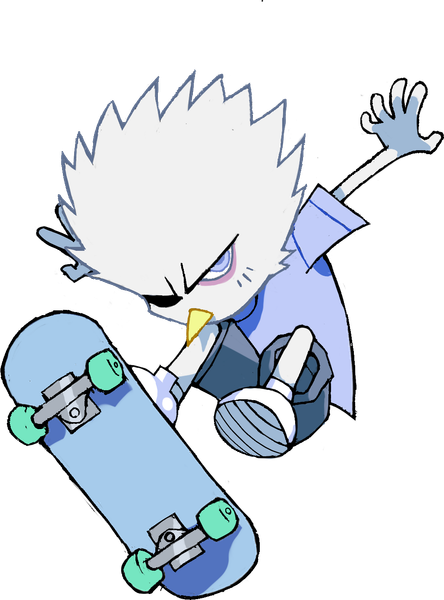

OPENING SHUV
If Shuv did not open by itself, tap below. On a computer there is nothing to open: the app lives on your phone.
No Shuv yet? Get it here.

If Shuv did not open by itself, tap below. On a computer there is nothing to open: the app lives on your phone.
No Shuv yet? Get it here.